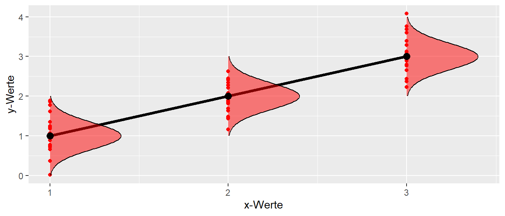
5 Modellfit und Vorhersage
Nachdem ein Modell mittels einer einfachen linearen Regression an die Daten gefittet wurde, sollte immer überprüft werden ob das Modell tatsächlich auch den Annahmen entspricht. Ein zentrales Mittel dazu ist eine Analyse der Residuen.
5.1 Residuen
Dazu schauen wir uns zunächst noch einmal an, was überhaupt Residuen \(e_i\) sind und gehen noch mal von den grundlegenden Modellannahmen aus (siehe Gleichung 5.1).
\[ y_i = \beta_0 + \beta_1 \cdot x_i + \epsilon_i, \qquad \epsilon_i \sim \mathcal{N}(0,\sigma^2) \tag{5.1}\]
Das lineare Regressionsmodell geht von einem linearen Zusammenhang in den Koeffizienten zwischen der Variablen \(x_i\) und den Variablen \(y_i\) aus. Additiv kommt daz ein normalverteilter Fehler \(\epsilon_i\). Die Normalverteilung der \(\epsilon_i\) haben einen Erwartungswert von \(\mu = 0\) und eine Standardabweichung von \(\sigma\). Die Standardabweichung \(\sigma\) ist zunächst unbekannt und muss über die Daten abgeschätzt werden. Dies führt dazu, dass \(y_i\) für jeden gegebenen Wert von \(x_i\) einer Normalverteilung mit \(\mathcal{N}(\beta_0 + \beta_1 x_i, \sigma^2)\) folgen und der bereits bekannten graphischen Darstellung (siehe Abbildung 5.1).
Für jeden gegebenen Wert von \(X\) sind die \(Y\)-Werte Normalverteilt. Die Varianz dieser Normalverteilungen ist gleich \(\sigma\) während der Mittelwert \(\mu\) immer um den Wert der Regressionsgeraden verschoben ist. D.h. die Streuung von \(\epsilon_i\) überträgt sich auf die Streuung von \(y_i\) für jeden gegebenen \(X\)-Wert. Ohne den zufälligen Einfluss der Fehlerwerte würden wir alle \(y_i\)-Werte perfekt auf der Regressionsgeraden erwarten. Dies deutet daher auch schon eine Möglichkeit an die Residuen \(\epsilon_i\) mittels der Daten abzuschätzen. Man verwendet die Abweichungen der beobachteten Werten \(y_i\) von den vorhergesagten Werten \(\hat{y}_i\) auf der Regressionsgeraden (siehe Gleichung 5.2).
\[ \hat{\epsilon}_i = e_i = y_i - \hat{y_i} \tag{5.2}\]
Diese Abweichungen \(e_i\) können als Schätzer \(\hat{\epsilon}_i\) für die wahren Residuen \(\epsilon_i\) verwendet werden (siehe Abbildung 5.2).
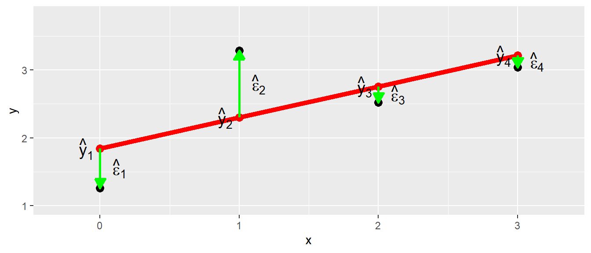
Da die Normalverteilungen der \(\epsilon_i\) für jeden \(X\)-Wert immer gleich sein sollten bis auf die Verschiebung von \(\mu_{Y|X}\), deutet dies ebenfalls eine erste Möglichkeit an, die Modellannahmen graphisch zu überprüfen. Wenn die Residuen \(e_i\) gegen die vorhergesagten Werte \(\hat{y}_i\) abgetragen werden, dann sollte die Verteilung der Residuen \(e_i\) überall nahezu gleich sein, da die Streuung \(\sigma\) unabhängig von der Position auf der Regressionsgerade ist. Der Residuenplot im Beispiel hat dann die folgende Form (siehe Abbildung 5.3).
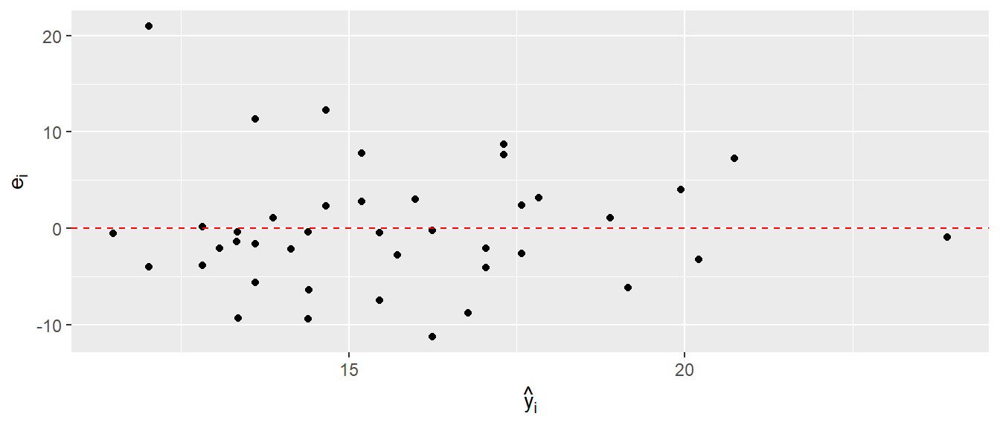
Der Plot sollte im Optimalfall so aussehen, dass die Residuen \(e_i\) gleichmäßig oberhalb und unterhalb um die Nulllinie verteilt sind und keine weiteren Strukturen oder Muster im Abhängigkeit mit \(\hat{y}_i\) zu erkennen sind. In dem Residuenplot in Abbildung 5.3 ist zunächst einmal kein größeres Problem zu erkennen, bis auf den einen Wert links oben.
Um besser zu Verstehen wie Probleme aussehen könnten, schauen wir uns zwei Residuenplots an, bei denen die Residuen \(e_i\) jeweils eine Struktur in Abhängigkeit von \(\hat{y}_i\) besitzen. (siehe Abbildung 5.4)
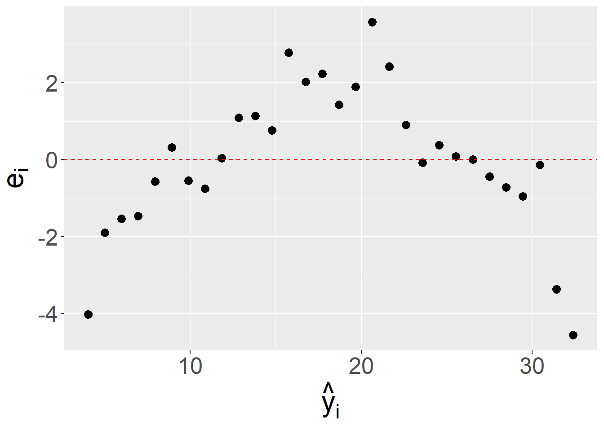
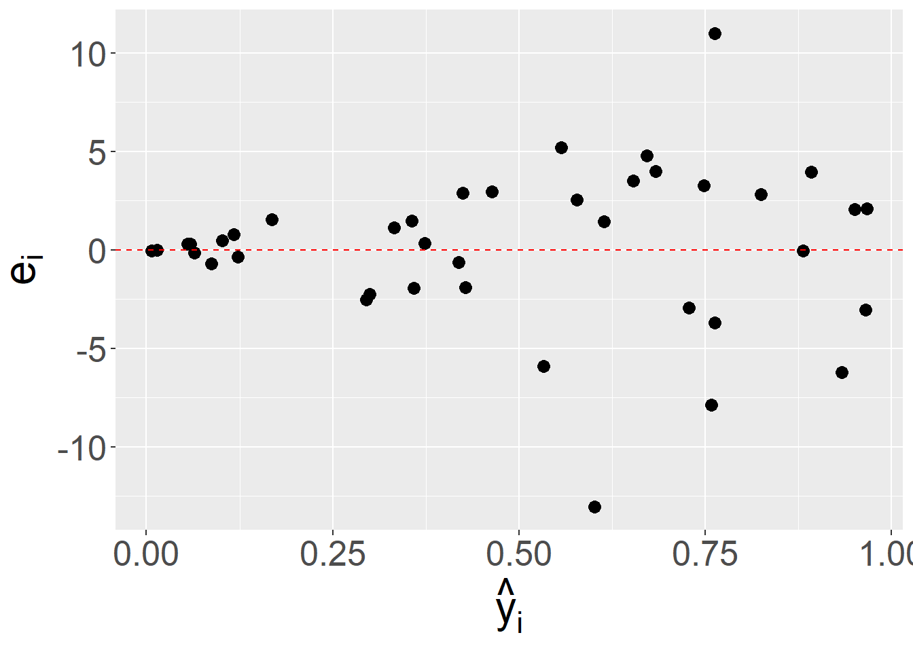
In Abbildung 5.4 (a) ist ein parabelförmiger Zusammenhang zwischen \(e_i\) und \(\hat{y}_i\) zu erkennen. Für kleine und große \(\hat{y}_i\) Werte sind die Residuen \(e_i\) negativ während für mittlere Werte von \(\hat{y}_i\) die Residuen \(e_i\) positiv sind. Diese deutet darauf hin, das zusäztliche Struktur in den Daten nicht im Modell erfasst wird und führt dazu, dass die Modellannahmen der Normalverteilung der \(\epsilon_i\) nicht erfüllt sind.
In Abbildung 5.4 (b) ist dagegen eine anderes Problem zu beobachten. Die Residuen \(e_i\) zeigen zwar keine Struktur bezüglich positiv zu negativen Werten, allerdings werden die Abweichung von \(0\) mit größer werdenen \(\hat{y}_i\) immer größer. Dies deutet darauf hin, das die Streuung der Daten nicht gleich ist. Dies wird als Heteroskedastizität bezeichnet und deutet wiederum auf eine Verletzung der Annahmen bei der Homoskedastitzität ausgegangen wird. D.h. die Streuung soll über den gesamten Bereich von \(\hat{y}_i\) gleich bleiben.
Definition 5.1 (Homoskedastizität) Wenn die Größe der Varianz der Residuen \(\epsilon_i\) in einem Regressionsmodell unabhängig von der Größe der Vorhersagevariable \(X_i\) ist, wird dies als Homoskedastizität bezeichnet. Die Streuung der Residuen ist dann für alle Werte \(X_i\) gleich. Wenn dies nicht der Fall ist, wird von Heteroskedastizität gesprochen.
Da die Varianz also konstant für alle Werte von \(X_i\) ist, trifft dies ebenfalls für die vorhergesagten Werte \(\hat{Y}_i\) zu. Daher werden bei vielen der Graphen die Residuen \(\hat{\epsilon}_i\) gegen die \(\hat{Y_i}\) abgetragen. Dies hat den Vorteil, dass später bei der multiplen Regression die gleiche Art von Graphen benutzt werden kann, um Homoskeastizität zu analysieren.
Beispiel 5.1 In Pickett u. a. (2021) wurde die Geschwindigkeitsverläufe von \(19\) Kajakathleten über \(200\) Meter untersucht. Im Rahmen der Analyse wurde ein Ermüdungsindex (FI%) aus der Differenz der Bootsgeschwindigkeit vom schnellsten durchschnittlichen Tempo über einen 10 m Abschnitt bis hin zum langsamsten gemessenen durchschnittlichen Tempo über einen anderen 10 m Abschnitt während eines Rennens berechnet und als Prozentsatz ausgedrückt: FI% = (Spitze – langsamste/Spitze) × 100. Der Zusammenhang zwischen der schnellsten Rennzeit und FI ist in Abbildung 5.5 abgetragen.
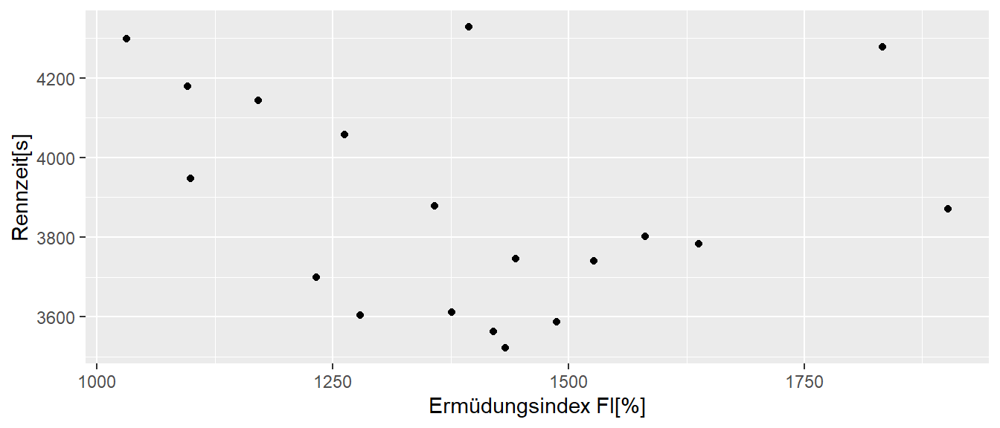
Ein Modellfit mit einem einfachen linearem Modell führt zu folgendem Ergebnis:
| Koeffizient | Wert | \(s_e\) | t-Wert | p-Wert |
|---|---|---|---|---|
| (Intercept) | 4184.77 | 382.52 | 10.94 | 0.00 |
| fatigue | -0.22 | 0.27 | -0.82 | 0.42 |
D.h. die Daten deuten auf keinen linearer Zusammenhang zwischen den Zeiten und dem Ermüdungsindex hin. Schauen wir uns einmal die Residuen \(e_i\) gegen die vorhergesagtem Modell \(\hat{y}_i\) an.
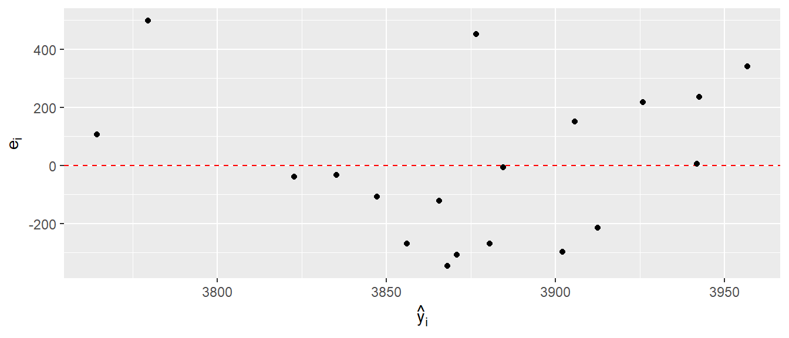
In Abbildung 5.6 zeigt sich, dass die Residuen nicht gleichmaßig über die Daten streuen, sondern ähnlich wie in Abbildung 5.4 auf einen parabelförmigen Zusammenhang deuten. Daher wurde in Pickett u. a. (2021) auch ein quadratischer Zusammenhang zwischen den Variablen untersucht. Dieser Ansatz führte zu einer deutlichen Verbesserung des Modellfits und deutete auch auf einen relevanten Zusammenhang zwischen den Daten.
Eine weitere Möglichkeit die Verteilung der Residuen zu überprüfen ist die Anfertigung von sogenannten qq-Plots. Dies ermöglichen etwas strukturierter die Verteilung der Residuen zu überprüfen.
5.1.1 Quantile-Quantile-Plots
qq-Plot ist die Kurzform von Quantile-Quantile-Plot. D.h. es werden die Quantilen von zwei Variablen gegeneinander abgetragen. Um die Funktionsweise besser zu verstehen schauen wir uns erst einmal ein Spielzeugbeispiel an. In Tabelle 5.2 ist eine kleiner Datensatz mit \(n = 5\) Datenpunkten angezeigt.
| y |
|---|
| -2.0 |
| 5.0 |
| -1.2 |
| 0.1 |
| 7.0 |
Wir wollen jetzt überprüfen ob dieser Datensatz einer Normalverteilung folgt (Wohlwissend das mit fünf Datenpunkten keine Verteilungsannahme überprüft werden kann). Dazu schauen wir uns zunächst noch einmal die bekannte Standardnormalverteilung \(\Phi(z) = \mathcal{N}(\mu=0,\sigma^2=1)\) an (siehe Abbildung 5.7).
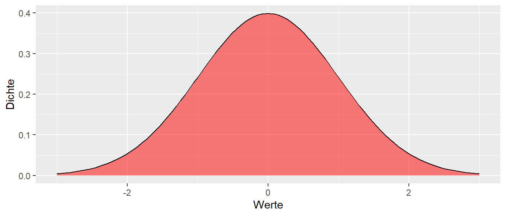
Im ersten Schritt unterteilen wir die Standardnormalverteilung \(\Phi(z)\) in \(n+1 = 6\) gleich große Flächen. D.h. die durch die Flächen bestimmten Abschnitte haben alle die gleiche Wahrscheinlichkeit (=Fläche unter der Dichtefunktion). Die Flächen werden durch die jeweiligen Trennpunkte unterteilt. Diese Trennpunkte sind die Quantilen der Verteilung.
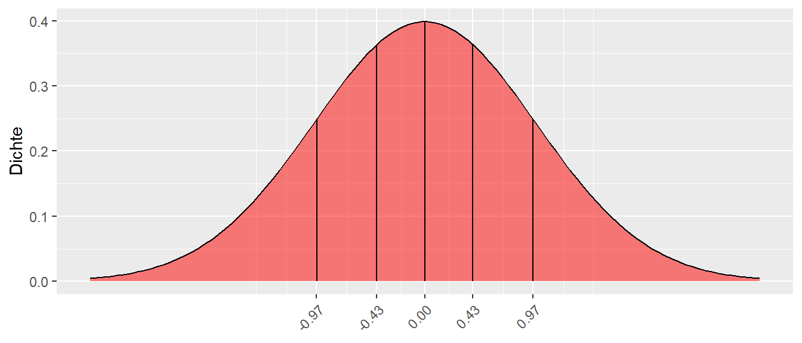
In unserem Beispiel haben wir nun \(n=5\) Datenpunkte. Daher unterteilen wir die Verteilung in \(6\) gleich große, bezogen auf die Fläche, Abschnitte. Die Abschnitte haben somit jeweils eine Fläche von \(p = \frac{1}{6} = 0.17\). D.h. \(\frac{1}{6}\) der Werte von \(\Phi(x)\) liegen links des ersten Trennpunktes, \(\frac{2}{6}\) der Werte von \(\Phi(x)\) liegen links des zweiten Trennpunktes, usw.. Dadurch werden durch die Trennpunkte die jeweiligen Quantilen bestimmt. Bezogen auf unserem Ziel zu überprüfen ob unsere beobachteten Daten einer bestimmten theoretischen Verteilung folgen werden die theoretischen Quantilen die unter der Verteilungsannahme erwartet werden bestimmt.
Die Idee hinter dem qq-Plot besteht also darin, die empirischen Quantilen gegen die theoretischen Quantilen abzutragen (siehe Abbildung 5.9). Wenn die beobachteten Daten aus der gleichen Verteilung wie die theoretische Verteilung stammen, dann sollten die Punkte einer Geraden folgen. Die Steigung der Geraden ist \(1\), wenn es sich um die identischen Verteilungen handelt. Wenn die Steigung \(\neq1\) ist, dann kommen die Datenpunkte aus der gleichen Verteilungsfamilie sind aber um einen Skalierungsfaktor unterschiedlich bzw. um den Mittelwert verschoben. Die Punkte sollten aber trotzdem auf einer Geraden liegen. Daher ist es nicht notwendig die exakte theoretische Verteilung zu kennen, sondern es reicht zu wissen aus welcher Familie die Verteilung stammt.
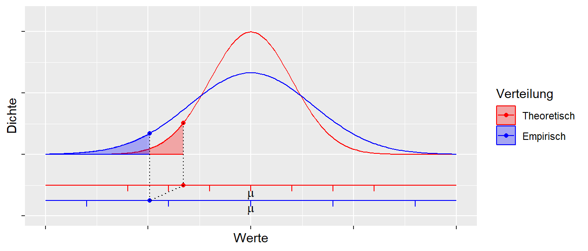
Um die empirischen Quartilen zu bestimmen, werden dazu zunächst die beobachteten Datenpunkte aus Tabelle 5.2 aufsteigend nach der Größe sortiert (siehe Tabelle 5.3). Diese Werte können als empirische Quantilen bezeichnet werden. Unter der Annahme, dass die Werte eine repräsentative Stichprobe aus der Verteilung darstellen, erwarten wir, dass wenn wir weitere Werte beobachten würden, etwa \(\frac{1}{6}\) der Werte kleiner als der kleinste Wert wären, \(\frac{2}{6}\) der weiteren Werte kleiner als der 2. kleinste Wert wären und so weiter und so fort.
| kleinster | 2.kleinster | mittlerer | 2.größter | größter |
|---|---|---|---|---|
| -2 | -1.2 | 0.1 | 5 | 7 |
Daher, wenn die beobachteten Werte der angenommenen theoretischen Verteilung folgen, dann sollte ein Graph der empirischen Quartilen gegen die theoretischen Quartilen nahezu (Stichprobenvariabilität) einer Geraden folgen.
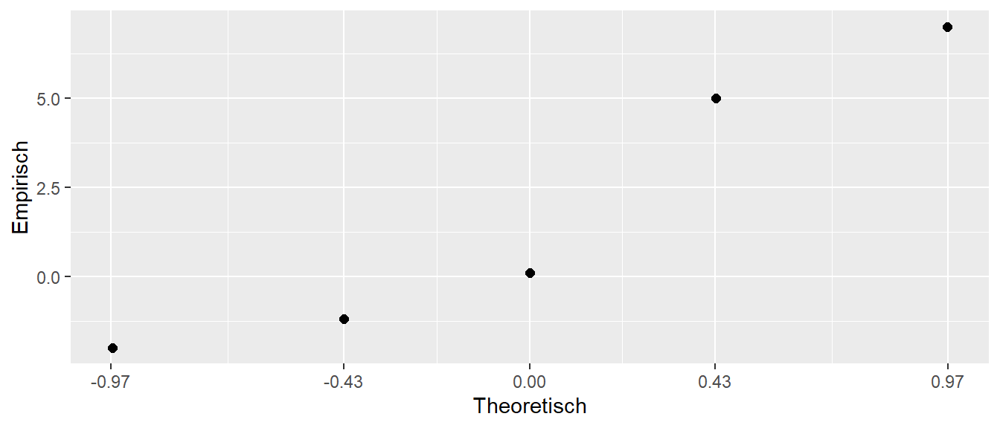
In Abbildung 5.10 sind die empirischen Quartilen gegen die theoretischen Quantilen für unser kleines Beispiel abgetragen. Tatsächlich ist es in diesem Fall schwierig eine Gerade zu erkennen bzw. von einer zu sprechen, da es sich nur um besagte fünf Wert handelt. Nochmals, mit \(n=5\) kann eine realistische Verteilungsannahme nicht überprüft werden.
Wenn der Datensatz größer ist, dann eignet sich ein qq-Plot allerdings sehr gut Abweichungen zu erkennen. In Abbildung 5.11 sind verschiedene Beispiele abgetragen.
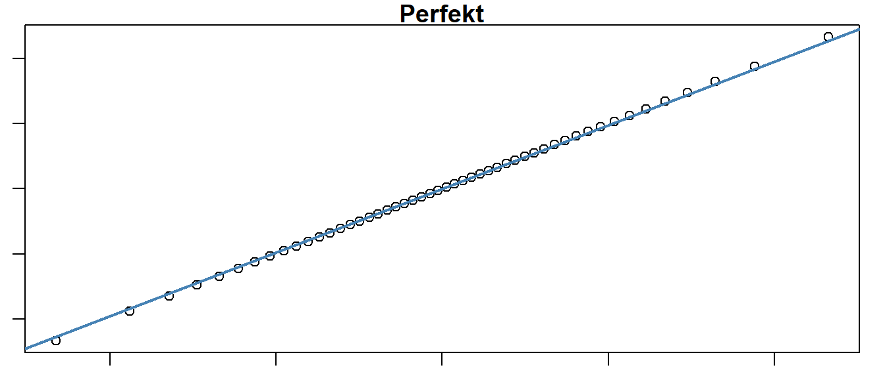
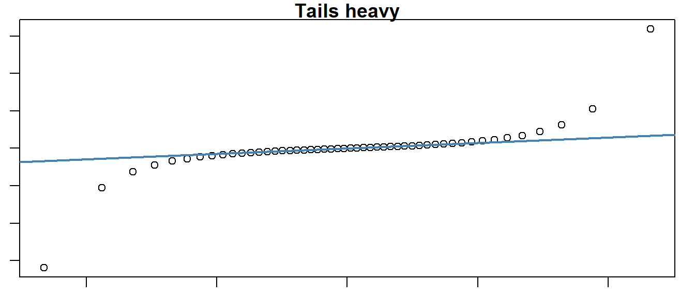
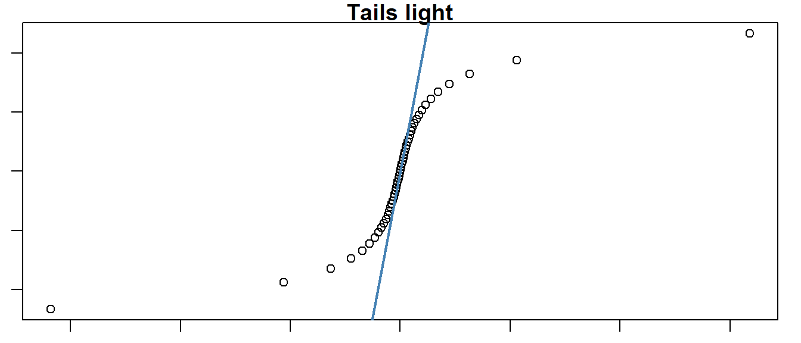
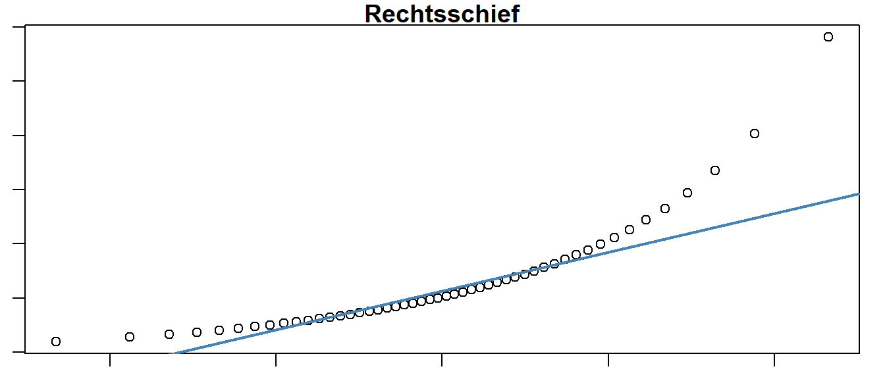
In Abbildung 5.11 (a) ist ein perfekter Zusammenhang zwischen den empirischen und den theoretischen Quantilen abgebildet. In diesem Falle wurden synthetisch für 50 normalverteiltet Zufallsdaten ein qq-Plot erstellt. Es ist zu sehen, das tatsächlich eine Gerade den Zusammenhang beschreibt. In Abbildung 5.11 (b) ist dagegen ein Zusammenhang abgetragen, bei dem die empirischen und die theoretische Verteilung nicht zusammenpassen. In diesem Fall sind die haben die Randwerte der empirischen Vereteilung eine höhere Wahrscheinlichkeit als die unter der theoretischen Verteilung zu erwarten ist. D.h. extreme Werte kommen in der beobachteten Verteilung öfter in der theoretischen Verteilung vor. Dies deutet darauf hin, dass die Streuung der Daten möglicherweise nicht korrekt modelliert wurde. In diesem Fall, wird von einer tail heavy Verteilung gesprochen.
In Abbildung 5.11 (c) ist der gegenteilige Effekt abgetragen. Hier hat die theoretische Verteilung mehr Wahrscheinlichkeitsmasse in den Randzonen als die empirische Verteilung. Die beobachtete Verteilung ist tail light. Entsprechend ist in Abbildung 5.11 (d) ein Beispiel abgebildet, bei dem nur eine der Randzonen zu viel Wahrscheinlichkeitsmasse besitzt. Da die theoretische Verteilung wiederum die Normalverteilung ist und diese Symmetrisch ist, deutet diese darauf hin, das die empirische Verteilung ähnlich wie in Abbildung 5.11 (b) in der rechten Randzone zu viele Werte hat und daher Rechtsschief ist.
Für unsere Daten ergibt sich das folgende qq-Diagramm (siehe Abbildung 5.12)
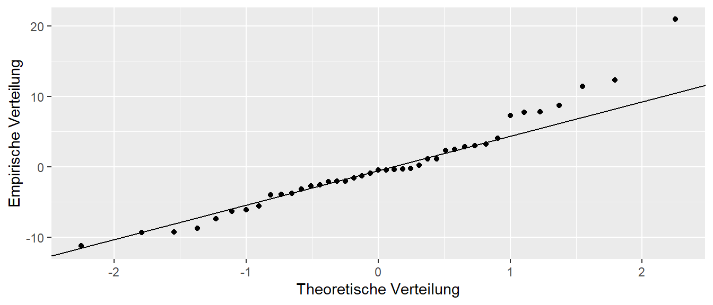
Der Graph sieht zunächst einmal gar nicht so schlecht aus. Allerdings deutet die Abweichung rechts oben darauf hin, das möglicherweise die Streuung nicht korrekt abgeschätzt wurde. Insbesondere ist ein Wert zu sehen, der im Verhältnis zu den anderen Werten schon relativ weit von der Gerade weg ist. Daher ist es hier angezeigt, diesen Wert noch einmal genauer zu untersuchen.
5.1.2 Standardisierte Residuen
Eine Möglichkeit so einen Wert zu untersuchen, ist abzuschätzen wie ungewöhnlich der zu dem Residuen \(e_i\) gehörende \(y_i\)-Wert ist. Ein Problem der einfachen Residuen \(e_i\) ist, dass diese laut der Modellannahmen die gleiche Varianz \(\sigma^2\) haben sollten. Allerdings, auf Grund der Art, wie die \(e_i\) berechnet werden, folgt die Randbedingung, dass die Summe der \(e_i\) gleich Null ist, \(\sum_{i=1}^n e_i = 0\). Dies führt dazu, dass die einfachen Residuen nicht unabhängig voneinander sind und nicht immer Homoskedastizität besitzen. Daher gibt es eine weitere Art Residuen anhand des Modell zu berechnen, die nicht unter diesen Beschränkungen leiden. Dies sind die standardisierten Residuen \(e_{Si}\). Dazu müssen wir uns aber zunächst mit den sogenannten Hebelwerte \(h_i\) kurz beschäftigen.
5.1.2.1 Hebelwerte
Wenn ein Modell an die Daten gefittet wird, dann haben nicht alle Werte den gleichen Einfluss auf die Modellparameter. Manche Werte üben einen stärkeren Einfluss auf das Modell aus als andere Werte. In Abbildung 5.13 ist ein Beispiel abgebildet für einen Datensatz bei dem ein einzelner Punkt einen übermäßig großen Einfluss auf das Modell ausübt.
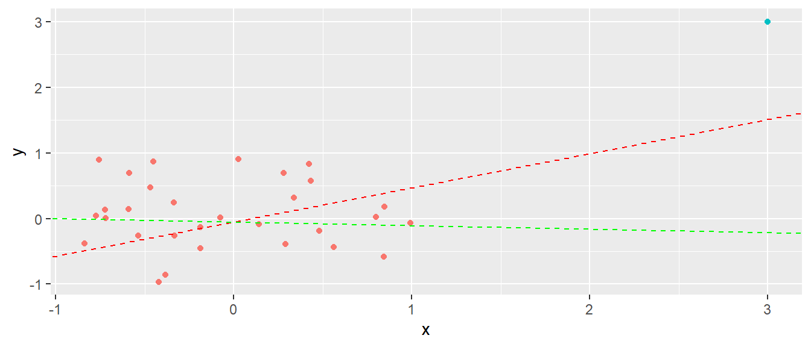
Der einzelen Punkt rechts oben in Abbildung 5.13 hat einen großen Einfluss auf die resultierende Regressionsgerade wie in der Abbildung zu sehen ist. Der Einfluss ist zum Teil durch den großen Abstand des \(x_i\)-Wertes vom Mittelwert der \(x_i\)-Werte \(\bar{x}\) bestimmt. Der Einfluss jedes einzelnen \(x\)-Wertes wird mittels der sogenannten Hebelwerte \(h_i\) bestimmt. Die genaue Berechnung der Hebelwerte \(h_i\) ist für das weitere Verständnis allerdings nicht wichtig, sondern mehr das Verständnis des Konzepts. Die Hebelwerte \(h_i\) können Werte in \(h_i \in [1/n,1]\) annehmen.
Tragen wir in die Grafik die Hebelwerte in die Grafik Abbildung 5.13 ein (siehe Abbildung 5.14), dann ist zu sehen, dass der abgesetzte Wert auch den größten Hebelwert hat.
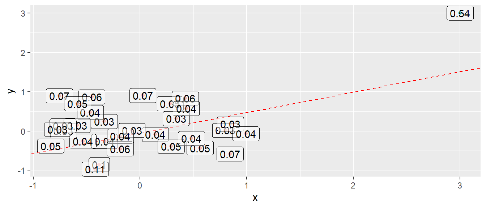
Eine Daumenregel für die Hebelwerte ist der Schwellenwert von \((2k+2)/n\), wobei \(k\) die Anzahl der unabhängigen Variablen ist. Für den Beispieldatensatz in Abbildung 5.14 würde sich daher ein Wert von \((2\cdot 1+2)/30 = 0.13\) ergeben. Entsprechend wäre der abgesetzte Wert mit einem Hebelwert von \(h_i = 0.54\) als problematisch einzustufen. Die Hebelwerte können nun dazu benutzt werden standardisierte Residuen zu berechnen.
\[ e_{Si} = \frac{e_i}{\hat{\sigma}\sqrt{1-h_i}} \tag{5.3}\]
Die standardisierten Residuen \(e_{Si}\) haben durch die Normierung die Eigenschaft, dass sie eine Varianz und damit Standardabweichung von \(\sigma^2(e_{Si}) = 1\) haben, also Standardnormalverteilt \(\Phi(z)\) sein sollten. Dadurch können Abweichungen von den Modellannahmen leichter Identifiziert werden, da die Skala normiert ist. Eine Standardgrafik zum inspizieren der standardisierten Residuen ist wiederum eine Abbildung der \(e_{Si}\) gegen die \(\hat{y}_i\).
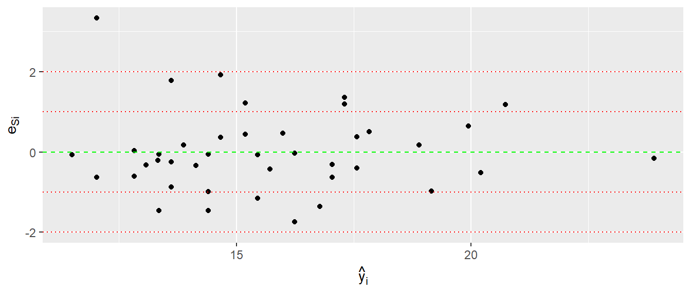
Die Abbildung 5.15 sieht relativ ähnlich zu Abbildung 5.3 aus. Durch die Änderung der Skala ist jetzt aber leichter abschätzbar ob die Verteilung der erwarteten Normalverteilung folgt. D.h. etwa \(\frac{2}{3}\) der Werte sollten zwischen \(-1\) und \(1\) liegen und etwa \(95\%\) zwischen \(-2\) und \(2\). Bis auf den einen Punkt oben rechts, sieht alles soweit unauffällig aus.
5.1.3 Übersicht über die Residuenarten
In Tabelle 5.4 sind noch einmal die drei Arten von Residuen und die dazugehörenden R Hilfsfunktionen für lm() aufgelistet.
R Funktionen
| Typ | Berechnung | Ziel | R Funktion |
|---|---|---|---|
| Einfache Residuen | \(e_i = y_i - \hat{y}_i\) | Verteilungsannahme | resid() |
| Standardisierte Residuen | \(e_{Si} = \frac{e_i}{\hat{\sigma}\sqrt{1-h_i}}\) | Verteilungsannahme | rstandard() |
5.2 Einflussmetriken
Um das gefittet Modell zu diagnostizieren reicht es allerdings nicht aus, sich nur die Residuen anzuschauen. Ein weiterer wichtiger Punkt ist die Analyse des Einflusses der einzelnen Datenpunkte auf das Modell. Wenn alles gut läuft sollte es keine einzelnen Datenpunkte geben, die einen übermäßig großen Einfluss auf das Modell ausüben. Anders ausgedrückt, die Anwesenheit bzw. Abwesenheit von einzelnen Datenpunkte sollte nicht dazu führen, dass die Aussage des Modells sich stark verändert. Im folgenden schauen wir uns dazu verschiedene Einflussmetriken die den Einfluss der Datenpunkte auf das Modell abschätzen.
Der Einfluss der Datenpunkte auf den Modellfit wird interpretiert indem ein Modell mit und ein Modell ohne den jeweiligen Datenpunkt gefittet wird. Der Einfluss auf verschiedene Modellparameter wird dann bestimmt und dementsprechend als möglicherweise bedenklich eingestuft. Die Meisten der im folgenden vorgestellten Ansätze verwenden in der einen oder anderen Form die Hebelwerte \(h_i\) die wir bereits kennengelernt haben.
5.2.1 DFFITS (difference in fits)
Das erst Maß, dass wir uns anschauen ist DFFITS (kurz für difference in fits). Das DFFITS-Maß wird getrennt für jeden einzelnen Datenpunkt berechnet und der Einfluss des Datenpunkts auf den gefitteten Werte \(\hat{y}_i\) für den jeweiligen Datenpunkt berechnet. Formal:
\[ (DFFITS)_i = \frac{\hat{y}_i - \hat{y}_{i(i)}}{\hat{\sigma}\sqrt{h_i}} \tag{5.4}\]
Im Zähler kommen von Gleichung 5.4 kommen zweimal die vorhergesagte \(y\)-Werte vor. \(\hat{y}_i\) ist dabei der ganz normale Vorhersagewert der uns mittlerweile schon mehrfach begegnet ist. Der zweite Wert \(\hat{y}_{i(i)}\) bezeichnet den vorhergesagten Wert aus dem Modell aus dem der Wert \(y_i\) weggelassen wurde. D.h, dass Modell ist mit einem Wert weniger gefittet worden. Daher misst die Differenz \(\hat{y}_i - \hat{y}_{i(i)}\) den Unterschied in den Vorhersagewerte zwischen den zwei Modellen bei denen einmal der Wert \(y_i\) zum fitten verwendet wurde und einmal wenn \(y_i\) weggelassen wurde. Umso größer der Unterschied zwischen diesen beiden Werte umso größer ist der Einfluss des Wertes \(y_i\) auf den Modellfit. Insgesamt, wird mittels DFFITS daher für jeden Datenpunkt ein Wert ermittelt und umso größer dieser Wert ist umso größer ist der Einfluss des jeweiligen Datenpunktes auf den Modellfit. Im idealen Fall sollte alle Datenpunkt ungefähr den gleichen Einfluss haben und einzelne Datenpunkte die einen übermäßig großen Einfluss auf das Modell haben sollten noch einmal genauer inspiziert werden.
Tipp
Als Daumenregel, kann für kleine bis mittlere Datensätze ein DFFITS von \(> 1\) auf Probleme hindeuten, während bei großen Datensätzen \(> 2\sqrt{k/N}\) als Orientierungshilfe verwendet werden kann (k := Anzahl der Prediktoren, N := Stichprobengröße).
Warnung
Wenn ein Wert außerhalb der Daumenregel liegt, heißt das nicht, dass er automatisch ausgeschlossen werden muss/soll, sondern lediglich inspiziert werden sollte und das Modell mit und ohne diesen Wert interpretiert werden sollte.
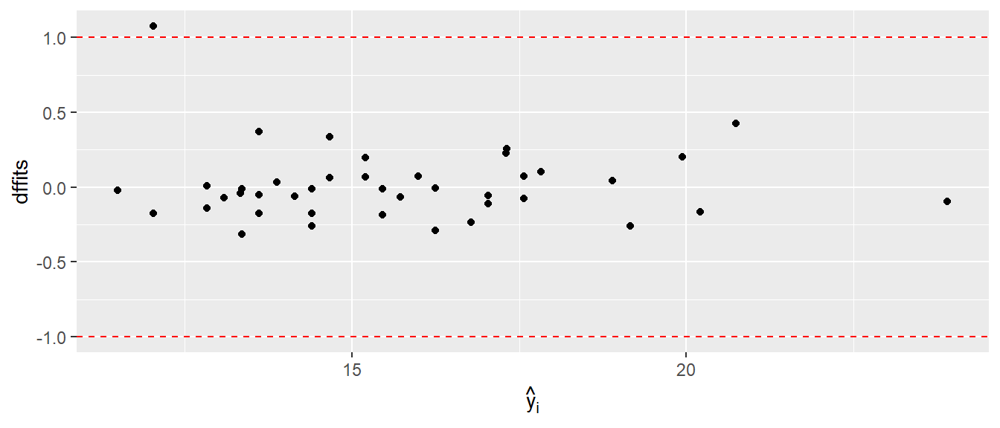
adl-Modell.
In Abbildung 5.16 sind die DFFITS-Werte gegen die vorhergesagten Werte \(\hat{y}_i\) abgetragen und zusätzlich die Daumenregel \(\pm1\) eingezeichnet. Hier ist ein Wert nur gerade so außerhalb des vorgeschlagenen Bereichs. Hier könnte daher sich dieser Datenpunkt noch einmal genauer angeschaut werden, ob bei Ausschluß des Wertes es zu einer qualitativ anderen Interpretation der Daten kommt oder ob beispielsweise Übertragungsfehler für diesen Wert vorliegen oder sonstige Gründe.
5.2.2 Cook-Abstand
Während DFFITS den Einfluss des Datenpunktes \(i\) auf den jeweiligen Datenpunkt abschätzt, wird bei dem sogenannten Cook-Abstand der Einfluss des \(i\)-ten Datenpunktes auf alle \(n\) vorhergesagten Werte \(\hat{y}_i\) untersucht. Formal:
\[ D_i = \frac{\sum_{j=1}^N(\hat{y_j} - \hat{y}_{j(i)})}{k\hat{\sigma}^2} \tag{5.5}\]
Hier bedeutet die Syntax \(\hat{y}_{j(i)}\) der vorhergesagte Wert für den Datenpunkt \(j\) wenn der \(i\)-te Datenpunkt ausgelassen wird.
Tipp
Eine Daumenregel um einen möglichen Ausreißer zu identifizieren kann über \(D_i > 1\) abgeschätzt werden.
In Abbildung 5.17 ist wiederum der übliche Graph gegen die vorhergesagten Werte \(\hat{y}_i\) zu sehen. Anhand der abgebildeten Wert ist keiner der Datenpunkte als problematisch zu identifizieren.
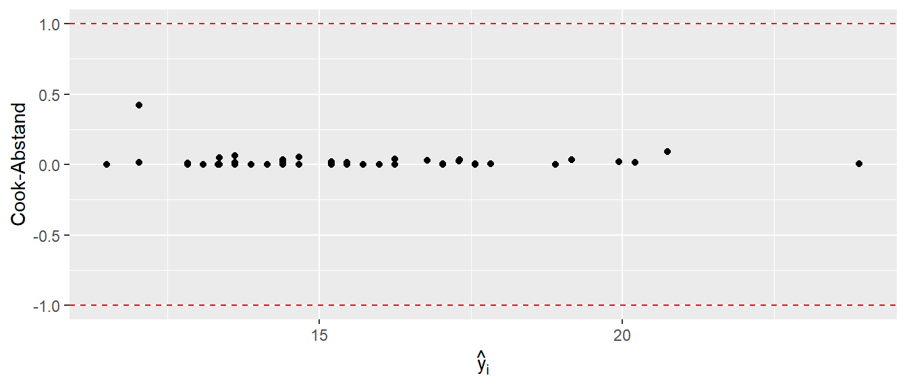
adl-Modell.
5.2.3 DFBETAS
Als letztes Maß schauen wir uns noch DFBETAS an. DFBETAS berechnet ein Maß für die Veränderung der \(\beta\)-Koeffizienten auf Grund der einzelnen Datenpunkte \(i\). D.h. es wird jetzt nicht nur ein Wert für jeden Wert berechnet, sondern ein Wert für den jeden Datenpunkt und jeden \(\beta\)-Koeffizienten. In unseren Fall mit einem y-Achsenabschnitt \(\beta_0\) und einem Steigungskoeffizienten \(\beta_1\) werden entsprechend \(2 \cdot x\) Werte berechnet. Formal:
\[ (DFBETAS)_{k(i)} = \frac{\hat{\beta}_k - \hat{\beta}_{k(i)}}{\sqrt{\hat{\sigma}^2c_{kk}}} \tag{5.6}\]
Wie aus Formel Gleichung 5.6 ersichtlich wird, wird die Veränderungen der Koeffizienten \(\beta_i\) bei weglassen des \(i\)-ten Datenpunktes abgeschätzt. Den Wert \(c_{kk}\) lassen wir unberücksichtigt, da er wiederum nur einen Normierungsfaktor darstellt.
Tipp
Als Daumenregel gilt für kleine bis mittlere Datensätze \(> 1\), bzw. für große Datensätze \(> 2/\sqrt{N}\)
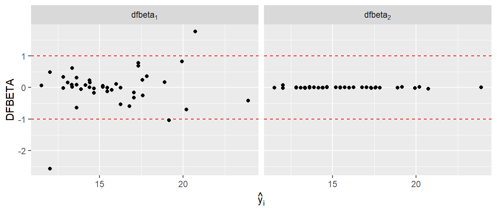
In Abbildung 5.18 sind die DFBETAS für die beiden Koeffizienten \(\hat{beta}_0\) und \(\hat{beta}_1\) abgetragen. Hier ist zu sehen, dass die Wert für den Steigunsgkoeffizienten \(\beta_1\) alle als unproblematisch anzusehen sind, während in Bezug auf \(\beta_0\) ein paar wenige Fälle eine weiter Inspektion nach sich ziehen könnten. Allerdings sollte berücksichtigt werden, dass der y-Achsenabschnitt sehr stark durch die Verteilung der Datenpunkte in Bezug auf die \(x\)-Werte beeinflusst ist, da der Mittelwert der \(x\)-Werte bei \(\bar{x} = 41.2\) liegt.
5.2.4 Übersicht über die Einflussmetriken
In Tabelle 5.5 sind noch einmal die verschiedenen Methoden tabellarisch und die dazugehörenden R Hilfsfunktionen für lm() dargestellt.
| Typ | Veränderung | Daumenregel | R Funktion |
|---|---|---|---|
| \((DFFITS)_i\) | Vorhersagewert i | \(>2\sqrt{k/N}\) | dffits() |
| Cook | Durchschnittliche Vorhersagewerte | \(>1\) | cooks.distance() |
| \((DFBETAS)_{k(i)}\) | Koeffizient i | \(>2\sqrt{N}\) | dfbetas() |
| \(e_{Ti}\) | Residuum i | t-Verteilung(n-k-2) | rstudent() |
Nochmal, die Daumenregeln sind wirklich auch nur Daumenregeln und identifzieren nicht automatisch ein Problem im Datensatz.
5.3 Modellvorhersagen
Wenn ein einfaches lineares Modell gefittet wurde, ist eine zentrale Fragestellung welche Vorhersagen anhand des Modells getroffen werden können. Es wurde schon vorher gezeigt, dass Vorhersagen mittels eines hat Symbols \(\hat{}\) über einer Variable angezeigt wird. Beim einfachen, linearen Regressionsmodell liegen die vorhergesagten Werte \(\hat{y}_i\) auf der berechneten Regressionsgerade. Da die Regressionsgerade anhand des Modells berechnet wird, berechnet sich der Werte \(\hat{y}_i\) für einen gegeben \(x\)-Wert nach.
\[ \hat{y} = \hat{\beta_0} + \hat{\beta_0} x \]
Wie schon mehrfach besprochen ist die ermittelte Regressionsgerade inhärent unsicher. Die anhand der Daten geschätzten Modellkoeffizienten \(\hat{\beta}_0\) und \(\hat{\beta}_1\) sind ja eben nur Schätzer und wenn die Daten noch einmal erhoben werden würden, dann würden mit großer Wahrscheinlichkeit andere Modellparameter berechnet werden. Diese Unsicherheit drückt sich in den Standardfehlern \(\hat{\sigma}_{\beta_0}\) und \(\hat{\sigma}_{\beta_1}\) aus, die letztendlich auch nur Schätzer der wahren Werte \(\sigma_{\beta_0}\) und \(\sigma_{\beta_1}\) sind. Diese Unsicherheit in den Modellparametern überträgt sich nun aber auch auf die geschätzten Werte \(\hat{y}_i\) und muss bei deren Interpretation der vorhergesagten Werte berücksichtigt werden.
Meistens liegt das Interesse jedoch weniger auf den vorhergesagten Werten \(\hat{y}_i\) für die gemessenen Werte, sondern es sollen Werte vorhergesagt werden für neue \(X\)-Werte die nicht im Datensatz enthalten sind. Die Unsicherheit im gefitteten Modell muss dann aber auch auf die Unsicherheit in den vorhergesagten Werten weitergetragen werden.
5.4 Unsicherheit in der Vorhersage
Wie schon angesprochen ist das an die Daten angepasste Modell mit Unsicherheiten behaftet. Diese Unsicherheiten drücken sich in den Standardfehler für die beiden Koeffizienten \(\hat{\beta_0}\) und \(\hat{\beta_1}\) aus (siehe Tabelle 5.6).
| Schätzer | \(s_e\) | |
|---|---|---|
| (Intercept) | -0.14 | 0.23 |
| v_ms | 0.76 | 0.02 |
Der vorhergesagte Wert \(\hat{y}\) ist daher für sich alleine ist noch nicht brauchbar, da auch Informationen über dessen Unsicherheit notwendig sind um die Ergebnisse korrekt zu interpretieren. Wenn die Unsicherheit groß ist, dann ist die Interpretation eher schwierig, als wenn die Untersicherheit klein ist. Die Größe der Unsicherheit wird mittels eines Konfidenzintervalls kommuniziert. Wenn das Intervall sehr breit ist, ist die Unsicherheit entsprechend geringer, wenn das Intervall eng ist, ist die mit der Vorhersage verbundene Unsicherheit geringer. Es können hier zwei unterschiedliche Anwendungsfälle voneinander unterschieden werden.
- Der mittlere, erwartete Wert \(\hat{\bar{y}}_{neu}\) (auch \(\hat{E}[y|x]\))
- Die Vorhersage eines einzelnen Wertes \(\bar{y}_{neu}\)
Im konkreten Fall werden damit zwei unterschiedliche Fragestellungen beantwortet. Im 1. Fall lautet die Frage, ich habe eine Trainingsgruppe und möchte wissen was der mittlere Wert der Gruppe anhand des Modells ist, wenn alle eine bestimmte Anlaufgeschwindigkeit \(v_{neu}\) haben. Im 2. Fall lautet die Frage welche Weite eine einzelne Athletin für die Anlaufgeschwindigkeit \(v_{neu}\) springen sollte. In beiden Fällen werden die Athleten nicht genau den Wert des Regressionsmodells treffen. Heuristisch sollte aber einleuchtend sein, dass im 1. Fall der Gruppenvorhersage die auftretenden Streuungen nach oben bzw. nach unten sich gegenseitig im Schnitt ausbalancieren sollten. Im 2. Fall der einzelnen Athletin ist dies nicht der Fall. Daher ist die Vorhersage im 2. Fall mit einer höhere Unsicherheit behaftet als im 1. Fall. Dieser Unterschied sollte sich dementsprechend in den Streuungen bzw. den entsprechenden Varianzen der beiden Vorhersagen wiederspiegeln.
In beiden Fällen ist der vorhergesagte Wert \(\hat{y}_{neu}\) jedoch gleich und entspricht der oben beschriebenen Methode anhand des Modell \(y_{\text{neu}} = \hat{\beta}_0 + \hat{\beta}_1 \cdot x_{\text{neu}}\). D.h. es wird der zu \(x_{\text{neu}}\) entsprechende Wert \(y_{\text{neu}}\) auf der Gerade berechnet.
Die Varianz für den ersten Fall, für den erwarteten Mittelwert errechnet sich nach:
\[ Var(\hat{\bar{y}}_{\text{neu}}) = \hat{\sigma}^2 \left[\frac{1}{n} + \frac{(x_{\text{neu}} - \bar{x})^2}{\sum(x_i - \bar{x})^2}\right] = \hat{\sigma}_{\hat{\bar{y}}_{\text{neu}}}^2 \tag{5.7}\]
Die Wurzel der Varianz ist stellt wie immer den Standardfehler von \(\hat{\bar{y}}_{\text{neu}}\) dar. Das dazugehörige Konfidenzintervall errechnet sich wie immer mittels dem Muster Statistik \(\pm\) Quantile der theoretischen Verteilung multipliziert mit dem Standardfehler mittels:
\[ \hat{\bar{y}}_{\text{neu}} \pm q_{t(1-\alpha/2;n-2)} \cdot \hat{\sigma}_{\hat{\bar{y}}_{\text{neu}}} \]
Die Varianz für die Vorhersage eines einzelnen Wertes errechnet sich dagegen nach:
\[ Var(\hat{y}_{\text{neu}}) = \hat{\sigma}^2 \left[1 + \frac{1}{n} + \frac{(x_{\text{neu}} - \bar{x})^2}{\sum(x_i - \bar{x})^2}\right] = \hat{\sigma}^2 + \hat{\sigma}_{\hat{\bar{y}}_{neu}}^2 = \hat{\sigma}_{\hat{y}_{\text{neu}}}^2 \tag{5.8}\]
Anhand von Gleichung 5.8 ist zu erkennen, dass sich die Varianz für einen einzelnen vorhergesagten Wert \(\hat{y}\) aus zwei Komponenten zusammensetzt. Einmal die Varianz aufgrund des vorhergesagten Mittelwerts und zusätzlich die Residuenvarianz auf Grund des Modells \(\sigma^2\). Insgesamt für das zu dem folgenden Konfidenzintervall:
\[ \hat{y}_{\text{neu}} \pm q_{t(1-\alpha/2;n-2)} \cdot \hat{\sigma}_{\hat{y}_{\text{neu}}} \]
Da \(\sigma^2\) überlicherweise auch nicht bekannt ist, sondern ebenfalls anhand der Daten geschätzt wird, wird der bereits besprochene Schätzer \(\hat{\sigma}^2 = MSE\) verwendet.
In beiden Berechnungen (Gleichung 5.8 und Gleichung 5.7) ist der folgende Term enthalten:
\[ \frac{(x_{\text{neu}} - \bar{x})^2}{\sum(x_i - \bar{x})^2} \]
enthalten. Anhand des Zählers kann abgeleitet werden, dass die Unsicherheit der Vorhersage mit dem Abstand vom Mittelwert der \(x\)-Werte zunimmt. Rein heuristisch macht dies Sinn, da davon ausgegangen werden kann, dass um den Mittelwert der \(x\)-Werte auch die meiste Information über \(y\) vorhanden ist und dementsprechend umso weiter die Werte sich vom \(\bar{x}\) entfernen die Information abnimmt. Im Nenner ist wiederum wie auch beim Standardfehler \(\sigma_{\beta_1}\) des Steigungskoeffizienten \(\beta_1\) zu sehen, dass die Varianz abnimmt mit der Streuung der \(x\)-Werte. Daher, wenn eine Vorhersage in einem bestimmten Bereich von \(x\)-Werten durchgeführt werden soll, dann sollte darauf geachtet werden möglichst diesen Bereich auch zu samplen um die Unsicherheit so klein wie möglich zu halten.
5.5 Die Modellgüte beurteilen
5.5.1 Root-mean-square \(\hat{\sigma}^2\)
Wie wir bereits bei der Betrachtung von Vorhersagen gesehen haben, ist die Verbundene Unsicherheit ursächlich in den Formeln Gleichung 5.8 und Gleichung 5.7 von der Residualvarianz \(\sigma^2\) bzw. derem Schätzer \(\hat{\sigma}^2 = MSE\) abhängig. Daher kann dieser Wert, der auch als Standardschätzfehler bezeichnet wird, auch direkt als ein Kriterium der Modellgüte interpretiert werden. Insbesondere die Wurzel aus diesem Wert kann direkt interpretiert werden, da sie die gleichen Einheiten wie die abhängige Variable \(y\) besitzt. Dabei ist weniger die absolute Größe der Residualvarianz von Interesse sondern der Wert ist immer im Verhältnis zur der konkrete Fragestellung, der Streuung der Daten und deren Einheiten.
Im vorliegenden Fall haben wir beispielsweise für das Sprungbeispiel \(\hat{\sigma} = 0.24\) beobachtet. D.h. im Mittel liegen unser Modell knapp einen viertel Meter daneben. Ob eine derart große Abweichung das Modell unbrauchbar bei der Entscheidungsfindung ist, ist keine Entscheidung die über die Statistik getroffen werden kann, sondern diese Entscheidung muss durch die Anwenderin des Modell getroffen werden.
5.5.2 Der Determinationskoeffizient \(R^2\)
Im Folgenden wird eine weitere Statistik eingeführt, die oft verwendet wird um die Modellgüte zu beurteilen. Sei dazu ein einfaches Modell mit nur vier Datenpunkten betrachtet.
| x | y |
|---|---|
| 0 | 1.26 |
| 1 | 3.29 |
| 2 | 2.52 |
| 3 | 3.04 |
In Abbildung 5.19 ist die Regressionsgerade und die vier Datenpunkte abgebildet.
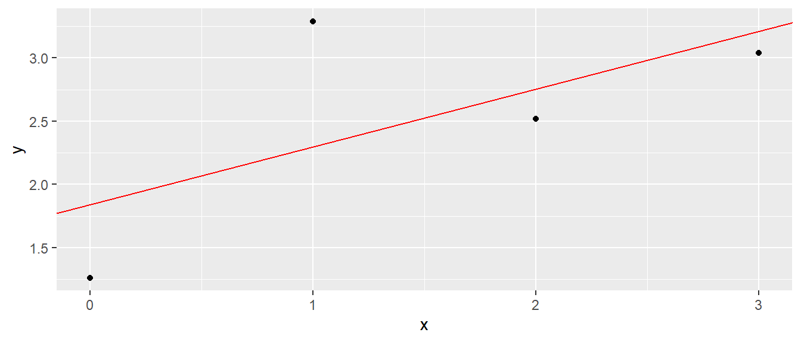
Schauen wir uns nun noch einmal die möglichen Abweichung bzw. Quadratsummen im einfachen Regressionmodell an. Die Gesamtvarianz beschreibt die quadrierten Abweichungen der \(Y\)-Werte vom Mittelwert \(\mu_Y\) und wird als \(SSTO\) (engl: total sum of squares) bezeichnet. Mit den beobachteten Daten \(y_i\) wird die geschätzte Gesamtvarianz anhand der Summe der quadrierten Abweichungen der \(y_i\)-Werte vom Gesamtmittelwert \(\bar{y}\) berechnet (siehe Gleichung 5.9).
\[ SSTO := \sum_{i=1}^N (y_i - \bar{y})^2 \tag{5.9}\]
Eine weitere Quadratsumme die anhand der Daten berechnet werden kann ist die sogenannte Regressionsvarianz \(SSR\). Diese berechnet sich nach Gleichung 5.10:
\[ SSR :=\sum_{i=1}^N(\hat{y}_i - \bar{y})^2 \tag{5.10}\]
D.h. die Regressionsvarianz \(SSR\) ist die Summe der quadrierte Abweichungen der anhand des Modells vorhergesagten Werte \(\hat{y}_i\)-Werte wiederum vom Gesamtmittelwert \(\bar{y}\). Diese Quadratsumme kann dahingehend interpretieren, dass sie anzeigt, um wie viel die Gesamtstreuung durch das Modell reduziert werden kann. Die dann verbleibende Quadratsumme ist die bereits bekannte Residualvarianz \(SSE\) (siehe Gleichung 5.11).
\[ SSE := \sum_{i=1}^N (y_i - \hat{y}_i)^2 \tag{5.11}\]
D.h. die Quadratsumme der Abweichungen der beobachteten \(Y\)-Werte \(y_i\) von denen anhand des Modells vorhergesagten Werte \(\hat{y}_i\). In Abbildung 5.20 sind die drei verschiedenen Quadratsummen bzw. die zugrundeliegende Abweichungen graphisch dargestellt.
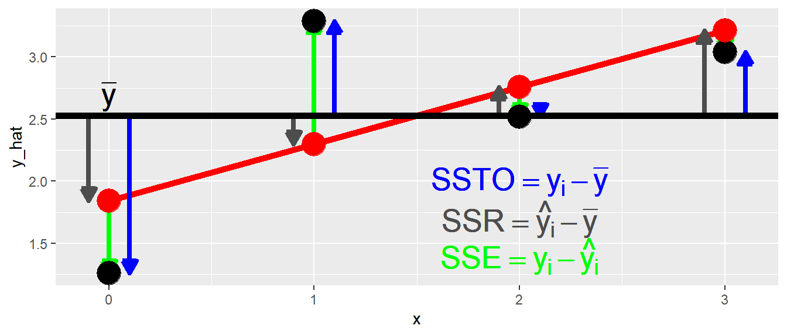
Anhand der Grafik bzw. der Pfeile in Abbildung 5.20 lässt sich erkennen, dass ein additiver Zusammenhang zwischen den Abweichungen besteht. Die blauen Pfeile von \(SSTO\) setzen sich aus der Addition aus den grünen und den grauen Pfeilen zusammen. Bezogen auf \(SSR\) sollte dies verdeutlichen, warum \(SSR\) dahingehend interpretiert werden kann um wie viel Abweichung die Gesamtvarianz \(SSTO\) mittels des Modells vermindert werden kann. Sei dazu zunächst nur der erste Datenpunkt betrachtet. Es soll eine Aussage über den möglichen Wert diese Punktes gegeben werden. Wenn nun kein Modell vorhanden ist, dann ist die beste verfügbare Schätzung für den Wert, der Mittelwert \(\bar{y}\). Der daraus resultierende Fehler wenn der Mittelwert \(\bar{y}\) verwendet wird ist der blaue Pfeil, die Abweichung von \(y_1\) zu \(\bar{y}\). Wenn nun das Modell verwendet wird, dann ist die beste verfügbare Schätzung der zu \(x_1\) gehörende Punkt auf der Geraden. Der anhand des Modell vorhergesagte Wert \(\hat{y}_1\) auf der Gerade ist deutlich näher an den beobachteten Wert \(y_1\) herangerückt ist. Nämlich um den Betrag des grauen Pfeils \(SSR\). Der verbleibender Fehler ist jetzt deutlich kleiner, nämlich der grüne Pfeil \(SSE\). Wenn diese Idee formalisiert wird:
\[ y_i - \bar{y} = y_i - \hat{y}_i + \hat{y}_i - \bar{y} = \underbrace{(y_i - \hat{y}_i)}_{SSE} + \underbrace{(\hat{y}_i - \bar{y})}_{SSR} \]
Um nun die Quadratsummen zu erhalten, wird diese Gleichung quadriert und über alle \(i=1,2,\ldots,N\) aufsummiert. Es lässt sich zeigen, dass die Kreuzprodukte der beiden Komponenten sich gegenseitig auslöschen. Daraus folgt der Zusammenhang:
\[ SSTO = SSR + SSE \]
D.h. auch die Summe der quadrierten Abweichungen, die Gesamtvarianz \(SSTO\) setzt sich aus zwei getrennten Komponenten zusammen. Einmal der Teil der Varianz der anhand des Modells erklärt werden kann (\(SSR\)) und derjenige Teil der nicht anhand des Modells erklärt werden kann (\(SSE\)). Aus diesem Zusammenhang lässt sich eine Metrik erstellen indem das Verhältnis von \(SSR\) to \(SSTO\) gebildet wird.
Dazu sei zunächst untersucht, was passiert wenn ein perfekter Zusammenhang zwischen \(X\) und \(Y\) vorliegt. In Abbildung 5.21 ist ein solcher Zusammenhang abgebildet.
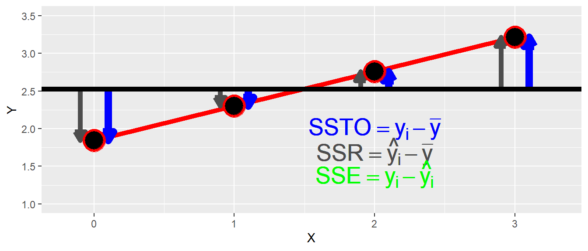
In diesem Fall, liegen die beobachteten Werte \(y_i\) genau auf der Regressionsgeraden. D.h. die Abweichungen \(y_i - \hat{y}_i = 0\) und damit \(SSE = 0\). In diesem Fall folgt für das Verhältnis von \(SSR\) zu \(SSTO\):
\[ \frac{SSR}{SSTO} = 1 \]
In Abbildung 5.22 ist nun der gegenteilige Zusammenhang abgebildet. Es besteht kein Zusammenhang zwischen \(X\) und \(Y\)e. D.h. das Modell liefert keine Informationen zu \(Y\), da die \(Y\)-Werte unabhängig von den \(X\)-Werten sind.
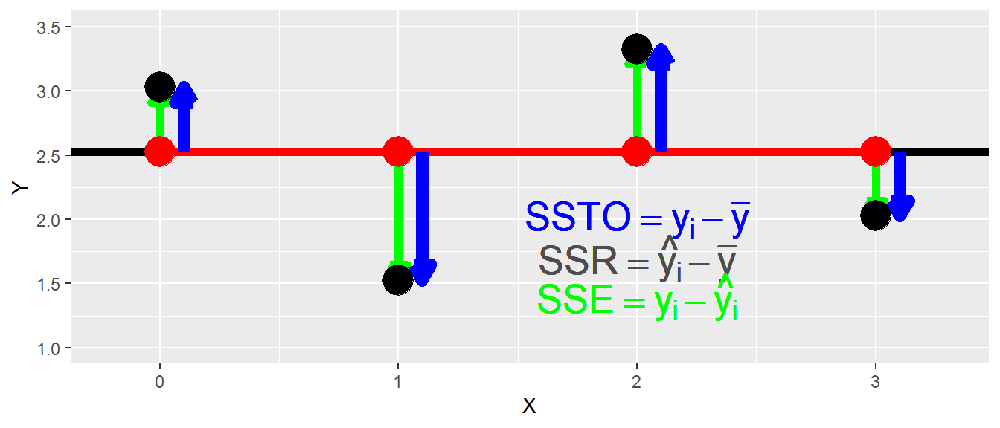
In diesem Fall sollte die Regressionsgerade die Steigung \(\beta_1 = 0\) haben. Der \(y\)-Achsenabschnitt \(\beta_0\) ist in diesem Fall gleich dem Mittelwert \(\bar{y}\) der \(y_i\)-Werte. Für die Abweichungen resultiert daraus, dass nun keine Abweichung zwischen den vorhergesagten Werten \(\hat{y}_i\) und dem Mittelwert \(\bar{y}\) besteht. Es gilt somit \(\hat{y}_i - \bar{y} = 0\). Daraus folgt, dass \(SSR = 0\) gilt. Wird nun wieder das Verhältnis von \(SSR\) zu \(SSTO\) gebildet, dann folgt dementsprechend:
\[ \frac{SSR}{SSTO} = 0 \]
Zusammen zeigen diese beiden Beispiele, das mittels des Verhältnisses von \(SSR\) zu \(SSTO\) eine Metrik entsteht, die wiedergibt wie gut die \(X\) und \(Y\)-Variablen in einenm linearen Zusammenhang stehen. Das Verhältnis wird als Determinationskoeffizient \(R^2\) bezeichnet. Die Metrik ist beschränkt auf Werte zwischen \(0\) und \(1\). Bei einem Wert von \(R^2 = 0\) besteht kein Zusammenhang, während bei \(R^2 = 1\) ein perfekter Zusammenhang besteht. Insgesamt gilt:
\[ R^2 = \frac{SSR}{SSTO} = 1 - \frac{SSE}{SSTO} \in [0,1] \tag{5.12}\]
Es besteht auch ein enger Zusammenhang zwischen dem Determinationskoeffizienten \(R^2\) und dem Korrelationskoeffizienten \(r_{xy} = \pm\sqrt{R^2}\). Dieser Zusammenhang gilt allerdings nur für die einfache lineare Regression und gilt nicht mehr bei der multiplen Regression die wir später kennenlernen werden.
Im Zusammenhang mit dem Determinationskoeffizienten \(R^2\) gilt es auf ein Missverständnis hinzuweisen. Ein hoher \(R^2\) zeigt unglücklicherweise nicht an, dass präzise Vorhersagen mittels des Modells getroffen werden. Der Determinationskoeffzient bestimmt nur die relative Reduktion der Varianz an nicht die Absolute. Ob ein Modell nützlich zur Prädiktion ist, hängt wie oben besprochen sehr eng mit dem absoluten Höhe der Residualvarianz zusammen.
Warnung
Trotzdem der Determinationskoeffizient \(R^2\) oft verwendet wird sollte nicht verschwiegen werden, dass \(R^2\) zur Beurteilung der Modellgüte nicht sonderlich gut geeignet ist. Die folgenden Ausführung beruhen weitestgehend auf Shalizi (2015). Es lässt sich zeigen, dass \(R^2\) der auch folgendermaßen hergeleitet werden kann:
\[\begin{equation} R^2 = \frac{\beta_1^2Var(X)}{\beta_1^2Var(X)+\sigma^2} \end{equation}\]
Daraus folgt, das wenn die Varianz von \(X\) vergrößert wird \(R^2\) beliebig nahe an \(1\) gebracht werden kann. Genauso, indem die Varianz von \(X\) verkleinert wird, kann \(R^2\) beliebig nahe an \(0\) gebracht werden. Weiterhin ist \(R^2\) auch nicht wirklich hilfreich um die Vorhersagegüte des Modells zu beurteilen, da wenn die Residualvarianz \(\sigma^2\) konstant gehalten wird, nur durch Veränderung der Varianz \(X\) \(R^2\) vergrößert wie auch verkleinert werden kann. Da wie schon erwähnt ein direkter Zusammenhang zwischen dem Korrelationskoeffizienten \(\rho_{XY}\) und \(R^2\) besteht, ist auch die oft verwendete Interpretation von \(R^2\) als der Anteil der durch \(X\) aufgeklärten Varianz von \(Y\) irreführend, da die Korrelation symmetrisch in beiden Variablen ist. Durch die Abhängigkeit von der Varianz von \(X\) kann \(R^2\) auch nicht direkt über Datensätze hinweg verglichen werden, da sich üblicherweise \(Var(X)\) zwischen Datensätzen unterscheiden wird (Shalizi 2015). Für eine umfangreiche Diskussion zu den Problem sei auch die Diskussion auf Gelman (2024) empfohlen.
Im Zusammenhang mit der multiplen Regression gibt es auch noch einen korrigierten Determinationskoeffizient \(R_a^2\). Dieser Determinationskoeffizient hat einen zusätzlichen penalty term der Anahnd der Anzahl der Prädiktoren \(X_i\) berechnet wird. Wie später im Zusammenhang mit der multiplen Regression gezeigt wird, kann der Determinationskoeffizient verbessert werden, indem einfach zusätzlich Variablen in das Modell eingefügt werden. Die Varialben müssen dazu noch nicht einmal einen Zusammenhang mit der abhängigen Variablen \(Y\) haben. Um diese Eigenschaft mit einzubeziehen wird die Anzahl der Variablen penalisiert.
\[ R_a^2 = 1 - \frac{\frac{SSE}{n-p}}{\frac{SSTO}{n-1}} = 1 - \frac{n-1}{n-p}\frac{SSE}{SSTO} \tag{5.13}\]
Damit sind nun mittlerweile auch fast alle Ausgabeinformationen der summary()-Funktion erarbeitet worden. Es fehlt noch die letzte Zeile die im Zusammenhang mit der multiplen linearen Regression betrachtet wird. Insgesamt sollte der Determinationskoeffizient \(R^2\) eher seltener eingesetzt werden und insbesondere wenn es um Modellgüte eigentlich auf Grund der Limitationen eher nicht (siehe auch Schemper (2003)).
5.6 Zum Weiterlesen
In Kapitel 2 Abschnitt 2.5 in Kutner u. a. (2005) lässt sich gut als ergänzendes Material lesen, inklusvie weiterführender Informationen zur Working-Hotelling-Methode (S.52ff).